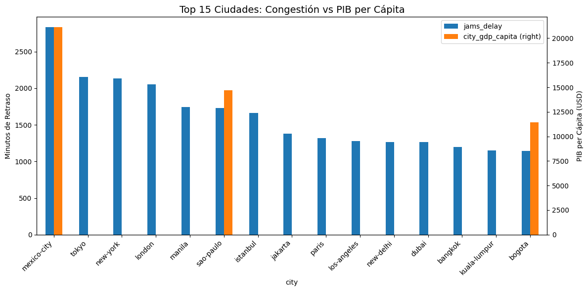
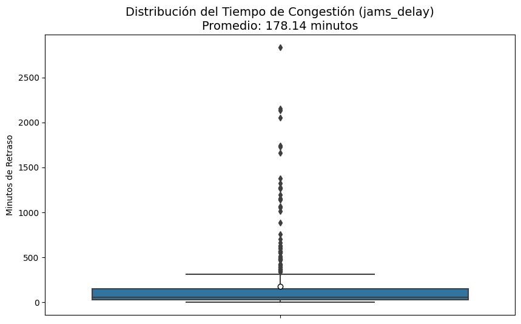
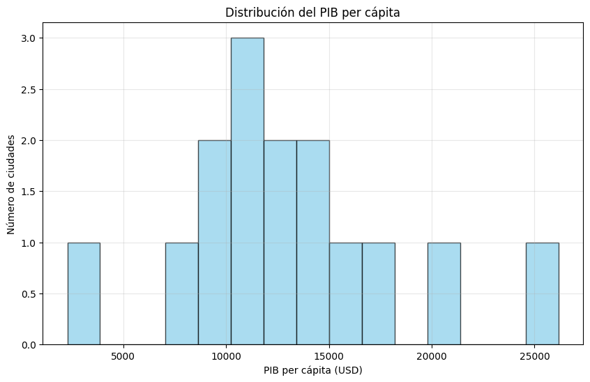

Data Analyst | Python & SQL Specialist
Soy un Analista de Datos con una trayectoria única: transicioné del sector legal al análisis técnico. Mi experiencia previa investigando casos de corrupción y transparencia me ha dado una base sólida en el manejo riguroso de información. Actualmente, transformo datos complejos en estrategias de negocio utilizando Python (Pandas, Matplotlib) y SQL.
📍 Ubicación: Lima, Perú
Simulación de un entorno E-commerce. El objetivo fue reconstruir el "Customer Journey" para identificar por qué los usuarios abandonaban el carrito de compras.
🚨 Identifiqué una caída crítica del 85% en el "Add-to-Cart". Además, detecté un fallo técnico en Ecuador, Colombia y Paraguay (0% conversión), recomendando revisión inmediata de pasarelas de pago.
Ver Perfil en GitHubInvestigación estadística en 387 ciudades para correlacionar la congestión vehicular con la productividad económica (PIB).
🏙️ Conclusión: Bogotá requiere inversión prioritaria. Como muestra el gráfico principal, tiene niveles de congestión (~1,141 mins) similares a ciudades ricas, pero con un PIB desproporcionadamente bajo.
Ver Notebook en GitHub
Figura 1: Comparativa de Congestión vs PIB


Exploración de datos (Outliers y Distribución)